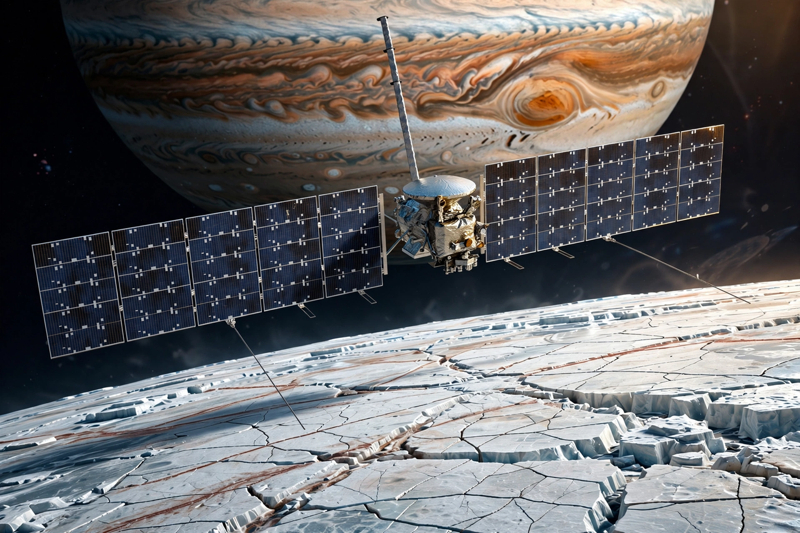

Featured Missions

James Webb Space Telescope
The largest, most powerful space observatory ever built, Webb peers back to the first galaxies that formed after the Big Bang and studies the atmospheres of planets around other stars.

Hubble Space Telescope
Since 1990 Hubble has revolutionised astronomy from low Earth orbit, measuring the expansion of the universe and producing some of the most famous images in science.

Europa Clipper
Launched in October 2024, Europa Clipper is travelling to Jupiter to investigate whether the ocean hidden beneath Europa's icy shell could support life.
Science Divisions
Astrophysics
How does the universe work? How did we get here? Are we alone? NASA's astrophysics program explores the cosmos with great observatories including Webb and Hubble, and is preparing the Nancy Grace Roman Space Telescope for launch later this decade.
Planetary Science
Robotic explorers study the planets, moons, asteroids and comets — from the Parker Solar Probe at the Sun (a heliophysics mission flown in close partnership) to Psyche, now cruising to a metal-rich asteroid, and Perseverance caching samples on Mars.
Earth Science
A fleet of satellites monitors our home planet as a single system — its oceans, atmosphere, ice and land — including the SWOT surface-water mission and the PACE ocean-colour observatory launched in 2024. See also NASA's main Earth pages.
Heliophysics
The study of the Sun and its influence through the solar system — space weather that affects astronauts, satellites and power grids. The Parker Solar Probe made its record close approaches to the Sun in late 2024, flying through the solar corona.
Biological and Physical Sciences
Research in microgravity aboard the International Space Station, from plant growth and fluid physics to the effects of spaceflight on the human body, enabling longer journeys to the Moon and Mars.
Citizen Science & Participatory Science
Hundreds of thousands of volunteers help NASA classify galaxies, hunt for planets and asteroids, and monitor Earth's environment. Anyone can take part — no degree required.
More from NASA
- NASA home — agency news, Artemis and human spaceflight
- NASA Image of the Day
- Webb on nasa.gov — news releases and imagery
- NASA on Wikipedia